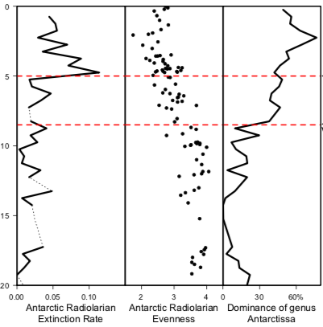
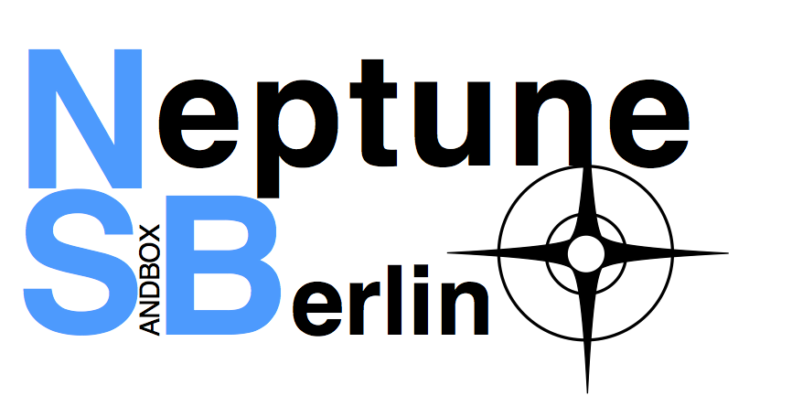
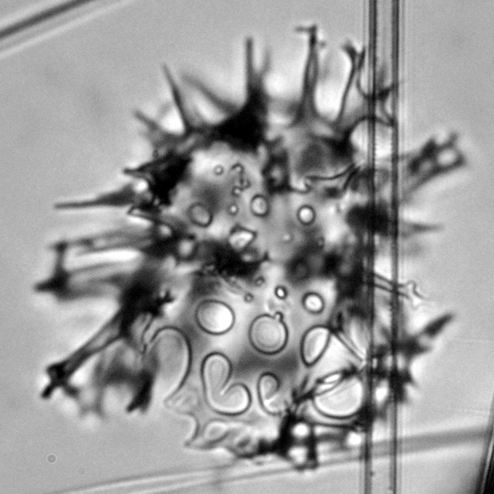

|
Paleogene Polar Plankton and Productivity(DAAD 'Make Our Planet Great Again' German Research Initiative)Aiming to support the prediction of future climate developments, the project will investigate the role of ocean phytoplankton which acts as a carbon-absorbing agent and, by way of sequestration, exports it with sinking shells into deep sea sediments. While it is well-known that the transition from the Eocene to the Oligocene about 30 million years ago brought significant climate changes and, in connection, also a change of the oceans’ carbon export production, the important role of phytoplankton and the links to changing ocean circulation are still poorly understood. Investigating the nature of this interaction will provide significant insight into the functions of the oceans as climate regulators. |
|  | Radiolarian biodiversity dynamicsThe radiolarian fossil record offers a unique opportunity to study evolutionary processes. It however until recently was very poorly documented, with the majority of species not described, and the occurrences of species over time only very spottily recorded. We are attempting to correct this by performing exhaustive, full-fauna studies of Neogene radiolarians. Our goal is to understand fundamental long-term controls on plankton diversity and how climate change impacts plankton evolution. |
|  | Big Data Analysis in MicropaleontologyWith the help of large research databases such as Neptune, and of workflows allowing the acquisition of a large amount of data, micropaleontology is getting ready to shift to second gear. |
|  | Radiolarian taxonomyTaxonomic research on radiolarians is one of the regular activities of the MfN Micropaleontology group, particularly species that are found either living in the plankton, or in deep-sea sediments. In addition to primary descriptive taxonomy of radiolarian species, our group contributes, and often leads, international efforts to synthesize the widely scattered taxonomic literature on radiolarians. |


Johan Renaudie.